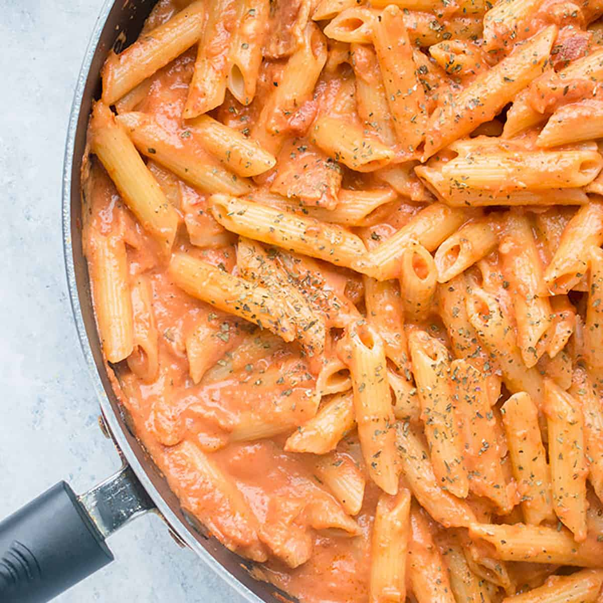

Penne a la Vodka

The following text is from the Food Network website for this recipe.
This is one of the best meals I've ever had for Italian dishes. It has been my go to since I was about 18 years old.
Ingredients
- 1 pound penne
- 3 cloves garlic, minced
- 1 whole medium onion, chopped finely
- 3 tablespoons butter
- 2 tablespoons olive oil
- 1 cup vodka
- One 14-ounce can tomato puree or tomato sauce
- 1 cup heavy cream
- 1 generous pinch red pepper flakes, plus more if needed
- 1/4 to 1/2 teaspoon salt
- Freshly ground black pepper
- Grated Parmesan, for serving
Steps
- Cook the pasta according to package directions.
- Saute the garlic and onions in 2 tablespoons butter
- Saute the olive oil in a saucepan over medium heat until soft
- Pour in the vodka, being careful if your stove has an open flame (remove the pan from the heat before adding)
- Cook and reduce for 2 to 3 minutes, then pour in the tomato puree
- Stir the mixture until it's thoroughly combined, then reduce the heat to low
- Pour in the heavy cream
- Stir to combine, then turn heat to the lowest simmer possible
- Sprinkle in the red pepper flakes
- Add salt and pepper to taste
- Stir in the remaining 1 tablespoon butter
- Pour the drained pasta into the sauce and toss to combine
- Sprinkle on the Parmesan
- Sprinkle on more red pepper flakes (if desired)